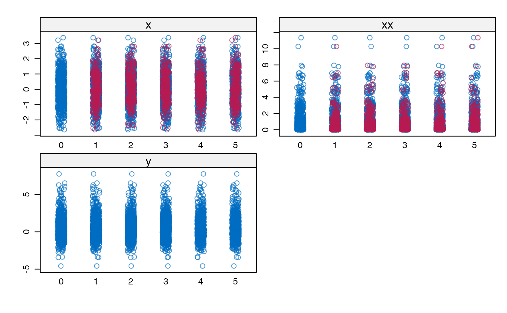
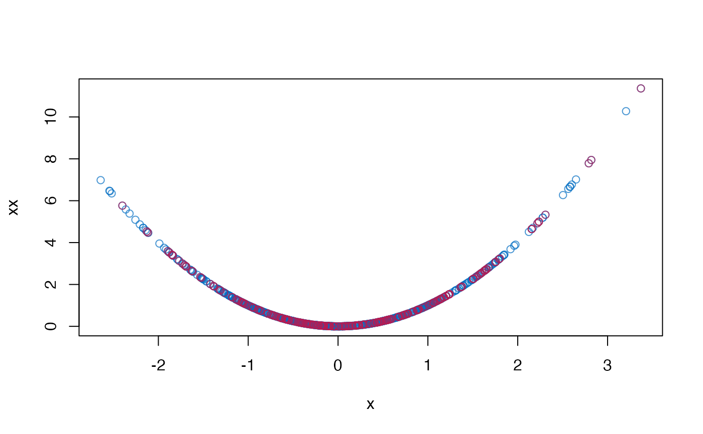

R/mice.impute.mpmm.R
mice.impute.mpmm.RdImputes multivariate incomplete data among which there are specific relations, for instance, polynomials, interactions, range restrictions and sum scores.
mice.impute.mpmm(data, format = "imputes", ...)matrix with exactly two missing data patterns
A character vector specifying the type of object that should
be returned. The default is format = "imputes".
Other named arguments.
A matrix with imputed data, which has ncol(y) columns and
sum(wy) rows.
This function implements the predictive mean matching and applies canonical regression analysis to select donors fora set of missing variables. In general, canonical regressionanalysis looks for a linear combination of covariates that predicts a linear combination of outcomes (a set of missing variables) optimally in a least-square sense (Israels, 1987). The predicted value of the linear combination of the set of missing variables would be applied to perform predictive mean matching.
The function requires variables in the block have the same missingness pattern. If there are more than one missingness pattern, the function will return a warning.
mice.impute.pmm
Van Buuren, S. (2018).
Flexible Imputation of Missing Data. Second Edition.
Chapman & Hall/CRC. Boca Raton, FL.
Other univariate imputation functions:
mice.impute.cart(),
mice.impute.lasso.logreg(),
mice.impute.lasso.norm(),
mice.impute.lasso.select.logreg(),
mice.impute.lasso.select.norm(),
mice.impute.lda(),
mice.impute.logreg.boot(),
mice.impute.logreg(),
mice.impute.mean(),
mice.impute.midastouch(),
mice.impute.mnar.logreg(),
mice.impute.norm.boot(),
mice.impute.norm.nob(),
mice.impute.norm.predict(),
mice.impute.norm(),
mice.impute.pmm(),
mice.impute.polr(),
mice.impute.polyreg(),
mice.impute.quadratic(),
mice.impute.rf(),
mice.impute.ri()
require(lattice)
#> Loading required package: lattice
# Create Data
B1 <- .5
B2 <- .5
X <- rnorm(1000)
XX <- X^2
e <- rnorm(1000, 0, 1)
Y <- B1 * X + B2 * XX + e
dat <- data.frame(x = X, xx = XX, y = Y)
# Impose 25 percent MCAR Missingness
dat[0 == rbinom(1000, 1, 1 - .25), 1:2] <- NA
# Prepare data for imputation
blk <- list(c("x", "xx"), "y")
meth <- c("mpmm", "")
# Impute data
imp <- mice(dat, blocks = blk, method = meth, print = FALSE)
# Pool results
pool(with(imp, lm(y ~ x + xx)))
#> Class: mipo m = 5
#> term m estimate ubar b t dfcom
#> 1 (Intercept) 5 -0.02005246 0.0014388313 2.150613e-04 0.0016969049 997
#> 2 x 5 0.55181312 0.0009613925 6.445960e-05 0.0010387440 997
#> 3 xx 5 0.52110721 0.0004782653 4.518738e-05 0.0005324902 997
#> df riv lambda fmi
#> 1 143.5186 0.17936334 0.15208489 0.16365905
#> 2 404.4994 0.08045779 0.07446639 0.07900889
#> 3 269.4375 0.11337819 0.10183259 0.10842616
# Plot results
stripplot(imp)

plot(dat$x, dat$xx, col = mdc(1), xlab = "x", ylab = "xx")
cmp <- complete(imp)
points(cmp$x[is.na(dat$x)], cmp$xx[is.na(dat$x)], col = mdc(2))
